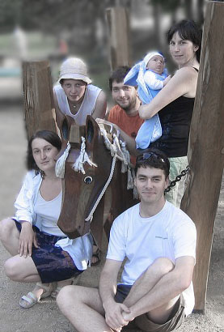
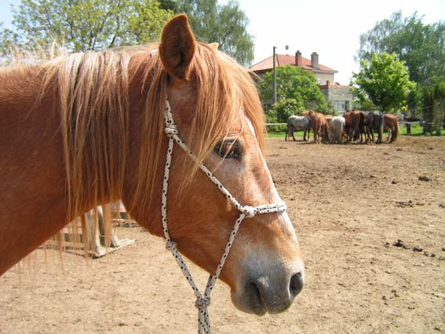
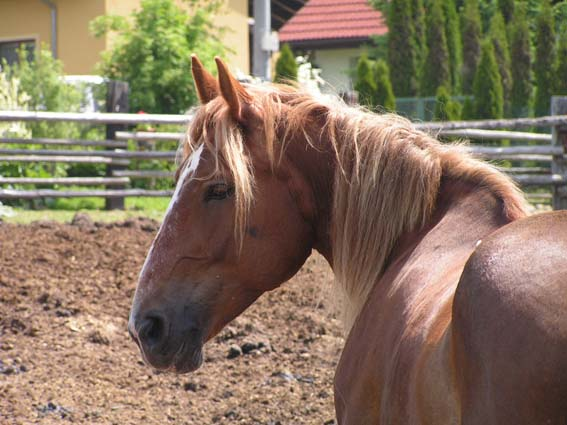
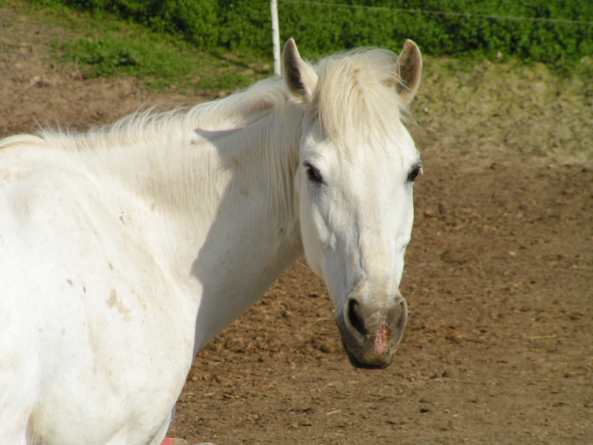
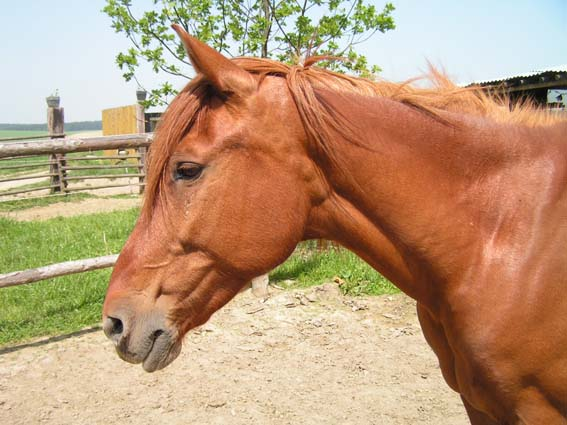

Tým

Tak to jsme my i s koněm. Teda někteří z nás.
Ti zbylí nemají rádi houpací koně. Každej jsme už holt nějakej...
A pak jsou tu ti, bez nichž by tato akce nevznikla:
Bakar
Jmenuji se Bakar nebo taky Barak. Jsou mi 3 roky, takže mám ještě celý život před sebou a myslím si, že dokážu cokoliv.
Jsem v podstatě kliďas (to mám po mamince), i když občas se trochu vztekám. Jen tak něco mě nerozhází, mou oblíbenou zábavou je ignorovat mloka. Ráda skáču (to mám po tatínkovi), ráda hraju "na kousanou" a "na kopanou", ale vždycky když to navrhnu mlokovi, tak mě kousne doopravdy a to pak není žádná hra :-(
Když si hrajem podle mloka, tak je to občas fajn, nejradši mám společné snídaně. Mlokova oblíbená hra je, že si na mě sedne, o té nevím co si mám myslet, tohle žádnej jinej kůň nedělá... Ale prý se mnou bude trávit týden o prázdninách, tak jsem zvědavá :-)
Kortéz
Oslovujte mě Don Kortéz Korkon Konrád z Domašovské skalky. Jsem perspektivní poučený mladý kůň atraktivního exteriéru. O můj interiér se starají výhradně jen pan Frederik řečený Fred a jedna velká lama. Narodil jsem se před 6 lety z nepochopitelného spojení mé mámy Kory s jedním šikovným poníkem. Reálie tohoto aktu jsou opředeny tajemstvím...
Po mamince jsem trošku pošuk, po tatínkovi příjemně temperamentní. S lidmi rád hraju hru "máte na mě?", jen Fred ji nechápe, on tak obecně spoustu mých úžasných nápadů nedocení. Furt by si hrál jen po jeho, ne že by to nebylo prima, ale když chci zablbnout, musím počkat na lamu.
Eta
Jmenuji se Eta, někdy mi říkají Ekologický Travní vysAvač. Mých 700kg živé váhy mi poskytuje prostor prosadit si mezi ostatními koňmi co chci, až na ty divný dvounohý stvoření, s těma hrajem zase jiný hry. Občas něco kousek popotáhnu, třeba balík voňavého sena, a za takovou prkotinu dostanu celé dvě odměrky granulí! No nekupte to... Jsem od přírody chladnokrevný kliďas, když nemusím, tak nedělám vůbec nic. Holky říkaly, že už brzy pojedu za ženichem, no proč ne, jen jsem zvědavá jak ty balíky odtahají beze mě :-)
Bíba
Jsem Dona Bíba, celým jménem Bílá Bára. Baví mě vyvolávat spekulace o mém těhotenství, nevím proč ty dvounohý vždycky překvapí, že si hříbata občas domlouvám sama.
Většinu času spím, ale když se někde běží závod, dokážu vyvinout překvapivou rychlost a přeskočit jakoukoliv ohradu. Jsem prostě flegmouš a když někdo chce abych něco dělala, tak se musí setsakra snažit. Na druhou stranu, za ty roky už skoro všechny ty prapodivný lidský hry znám a vím, kudy vede cesta nejmenšího odporu.
Gira
Ahoj. Celý život jsem myslela že jsem kůň, ale Fred mi říká Karel a ostatní tvrdí že jsem spíš člověk. Je mi 17 let, ale každý mi hádá o 10 míň. Životní krédo: "Když tě nevidím, nemůžu tě poslouchat". Jsem hvězda každé show, patřím k ruským divokým koním a nikomu nedám nic zadarmo. Oblíbená hra: "Jsem malý hodný koníček a to co jsem udělala už snad stačí?!".